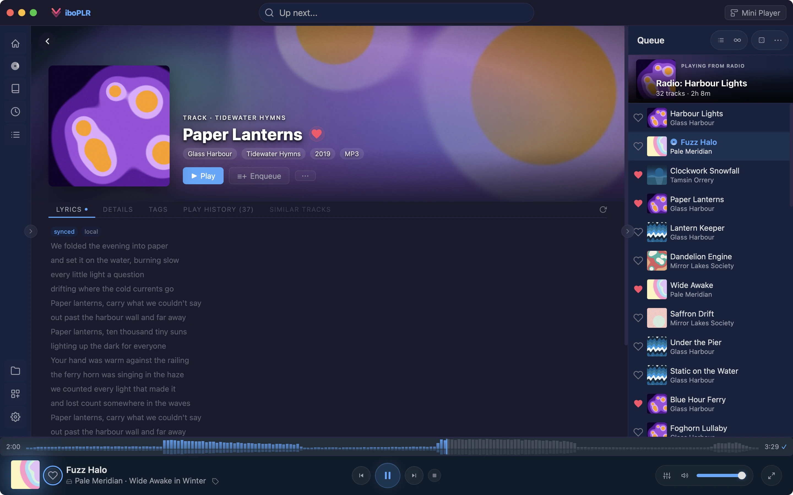

You spent years building playlists and likes on Spotify. With the Spotify plugin, Viboplr reads them and plays them from your own files or the sources you choose — and lets you keep copies on your own machine.
Your Spotify, inside Viboplr
Your mixes, on your home screen
Sign in to Spotify once, inside Viboplr. The plugin reads your Spotify home — Daily Mixes, Made For You and the rest — and turns each section into a shelf on Viboplr’s home screen. Press play on any playlist and its tracks load on the spot.
Spotify sections as Viboplr home shelvesplugin
Search Spotify from the Spotify view or the global searchplugin
Refreshes on its own, from every 6 hours to weeklyplugin
Video: a Daily Mix in ViboplrSpotify view → a Daily Mix → Play → the queue fills and the first song starts
Playback
Where the music comes from
Viboplr never streams audio from Spotify. A Spotify track is just a title and an artist; when it plays, Viboplr looks for it in order. If you own a copy, that copy plays. If not, the next source in your list takes over.
You choose the order in Settings → Providers
Sources such as yt-dlp, Soulseek or TIDALplugin
Your files — a local copy plays first
Your server — then your Subsonic or Navidrome library
Your sources — then each plugin source, in the order you set
Keep what’s yours
Copies that stay on your machine
Save any Spotify playlist as a Viboplr playlist, and import your Liked Songs as Viboplr likes. They live on your computer, so they’re still there whatever happens to your Spotify account.
Save to Playlists, one click per playlistplugin
Import Liked Songs — adds only, never overwrites your own likesplugin
Bring your listening history and loved tracks over from Last.fm tooplugin
Screenshot: Save to PlaylistsA Spotify playlist open, with Save to Playlists and Import Liked Songs visible
Discovery
Spotify radio, without the app
Right-click any track for a Spotify song radio, or play a whole album in Spotify’s track order. Track pages show Spotify play counts and artist pages show monthly listeners.
Start radio — the seed starts playing right awayplugin
Play the Full Albumplugin
Play counts and monthly listenersplugin

Spotify is a trademark of Spotify AB. Viboplr and its Spotify plugin are independent projects, not affiliated with or endorsed by Spotify.